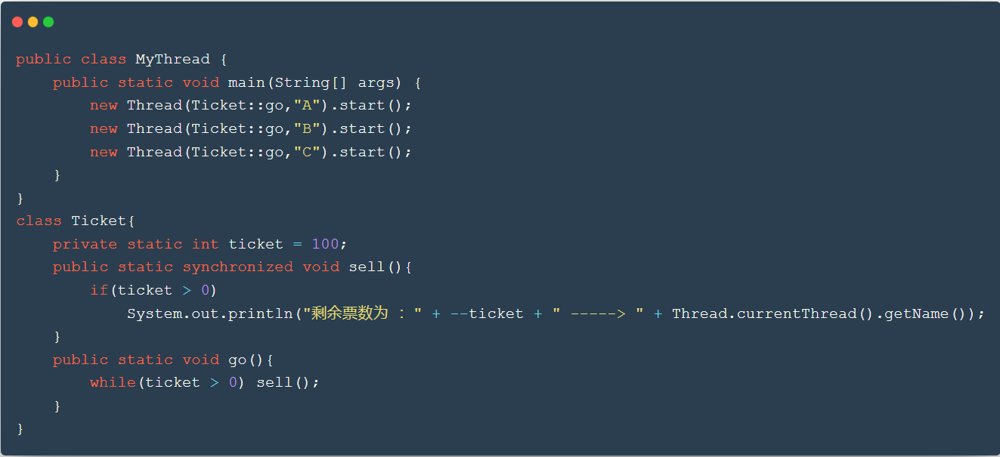
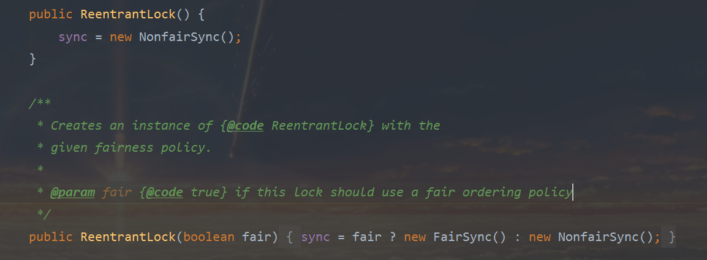
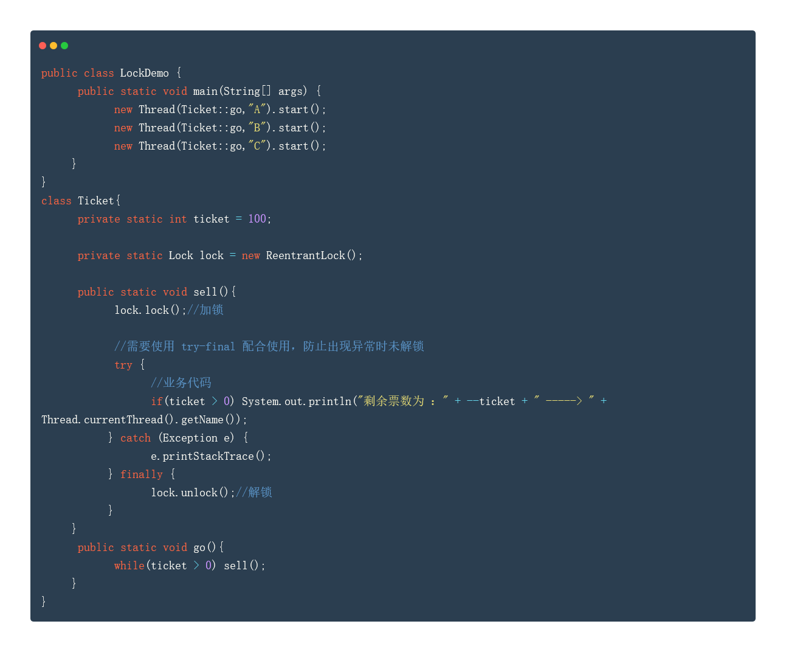
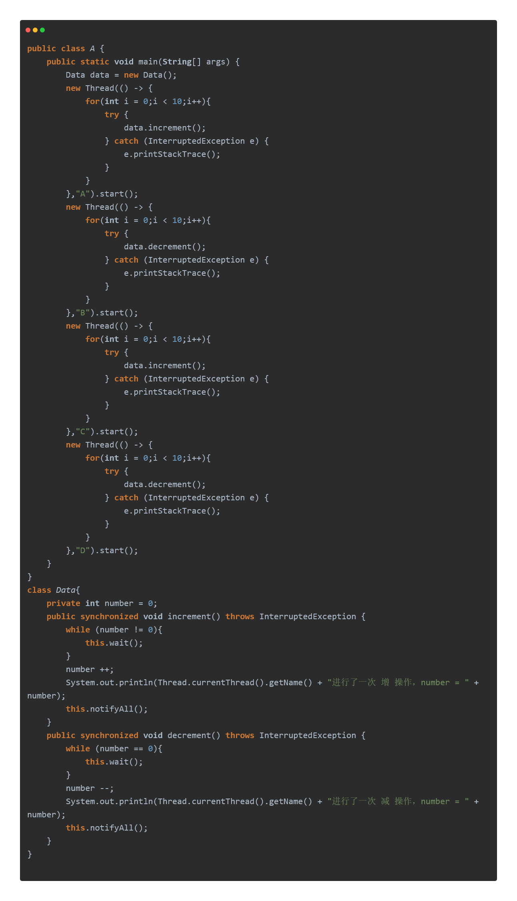

synchronized 锁
synchronized 本质：队列、锁

Lock 锁（接口）
ReentrantLock 类
可重入锁，默认是 非公平锁 。可通过构造器传入 true 来定义为 公平锁。

公平锁：十分公平，可以先来后到，排队机制。
非公平锁：十分不公平，可以插队。

synchronized 与 Lock 的区别
1、synchronized 是一个 java 关键字，而 Lock 是一个 java 接口。
2、synchronized 是无法判断锁的状态，而 Lock 可以判断是否获取到了锁。
3、synchronized 是全自动的，会自动释放锁，而 Lock 需要手动启动和释放锁，如果不释放锁会造成死锁。
4、synchronized 当前线程阻塞时会一直等待锁的释放，而 Lock 不一定会一直等下去。
5、synchronized 是非公平锁，是可重入锁；Lock 是可重入锁，可以设置为公平锁已经非公平锁。
6、synchronized 适合锁少量的代码通把问题，Lock 适合锁大量的同步代码。
wait 与 notify 虚假唤醒 问题

注意：上述代码中，increment 与 decrement 方法是同步方法，但他们的锁都是该 Data 的实例。即 main 方法里的 data 对象。
模拟两个线程 A 和 C：当 number 不为 0 时，进行释放该对象锁的休眠状态，等待被唤醒。
模拟另两个线程 B 和 D：当 number 为 0 时，进行释放该对象锁的休眠状态，等待被唤醒。
上述代码是没有并发问题的，但是若将 while(number != 0 ) 以及 while(number != 0 ) 中的 while 都改为 if 的话，就会产生线程不同步问题。
原因：
若此时 number = 0，B 和 D 会依次获锁并进入 decrement 方法中。一开始，由于 number = 0，B 会释放对象锁并进入休眠状态；同时 D 拿到对象锁，并也判断 number = 0，也会释放对象锁并进入休眠状态。
此后 A 线程获对象锁并进入 increment 方法中，由于 number = 0，直接进行了 number ++ 操作并使用 notifyAll() 唤醒 B 与 D 线程。而由于将 while 换成了 if ，此时 B 与 D 并不会再次判断 number 是否为 0 （此时 number 为 1），而都会直接进行 number – 操作，使得线程不同步。
若是 while ，则 B 一旦获对象锁并进行 number – 操作，结束 decrement 方法。随后 D 一旦拿到对象锁并唤醒后，由于是 while，会再次判断 number 是否为 0 ，而 B 已经将 number 减成 0 了，所以 D 仍然会处于休眠状态，等待被唤醒，从而解决不同步问题。
看上去在 B 被唤醒后 到 B 执行 number – 这之间的时间内，D 可能会也被唤醒并判断 while(number == 0) 为假，从而也会执行 number – 。但这是不可能发生的，因为 decrement 方法是同步方法，且锁都是 data 对象，不会发生并行。